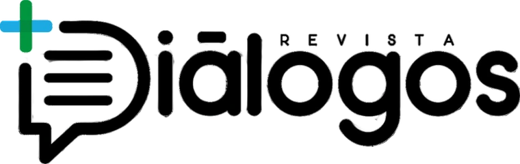
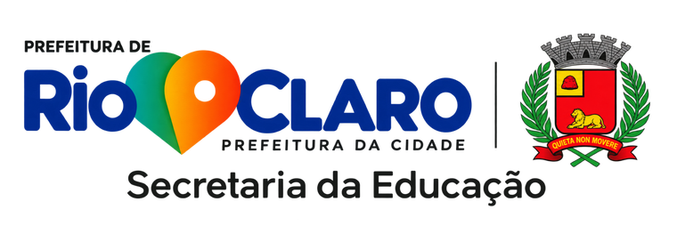
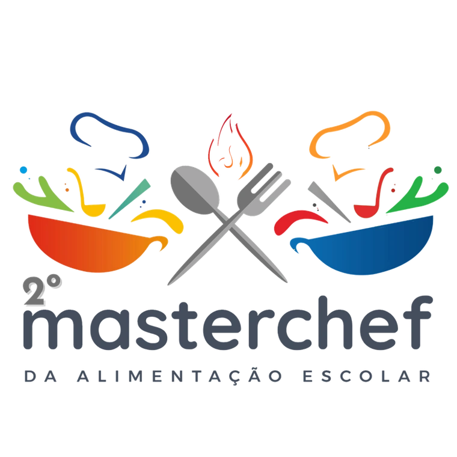

Revista +Diálogos
Professores da rede compartilham pesquisas e experiências de sala de aula. A edição de fevereiro de 2024 traz jogos de alfabetização e a memória da educação especial em Rio Claro.

Secretaria da educação de Rio Claro SP
As publicações, os encontros e as histórias da rede municipal de ensino.
Explorar projetos ↘A Nucom reúne a comunicação da Secretaria da Educação de Rio Claro. Aqui você encontra os projetos das escolas, os relatos de quem ensina e os registros dos encontros da rede.

Professores da rede compartilham pesquisas e experiências de sala de aula. A edição de fevereiro de 2024 traz jogos de alfabetização e a memória da educação especial em Rio Claro.

Na edição de 2024, cozinheiras e cozinheiros das escolas municipais apresentaram receitas para o cardápio dos estudantes.
O Simpósio Rio-clarense de Educação reúne educadores para palestras e trocas de experiências. Consulte o registro do simpósio no calendário escolar de 2024.